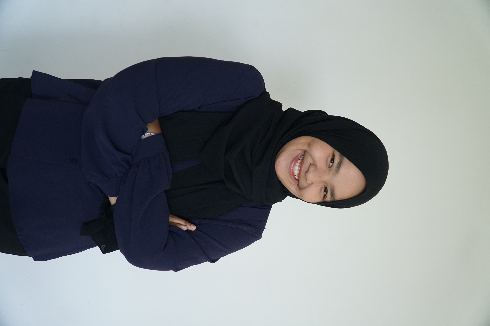
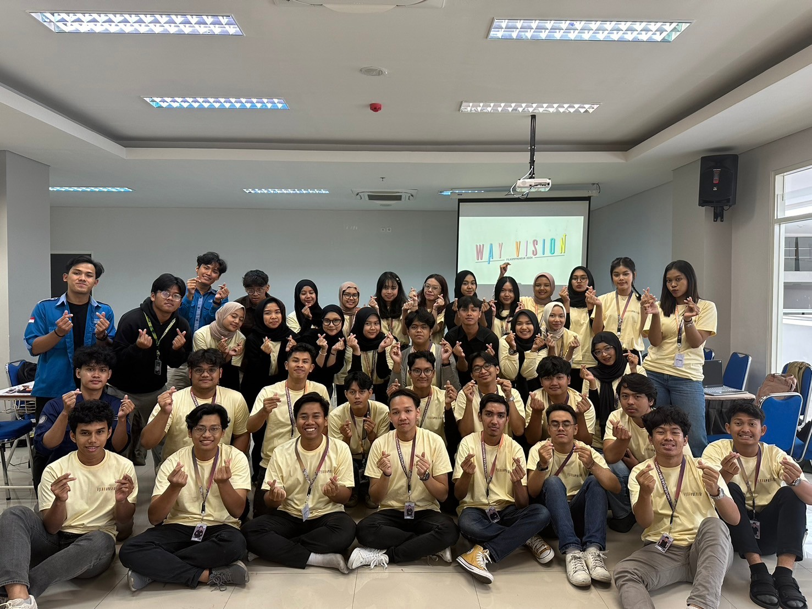
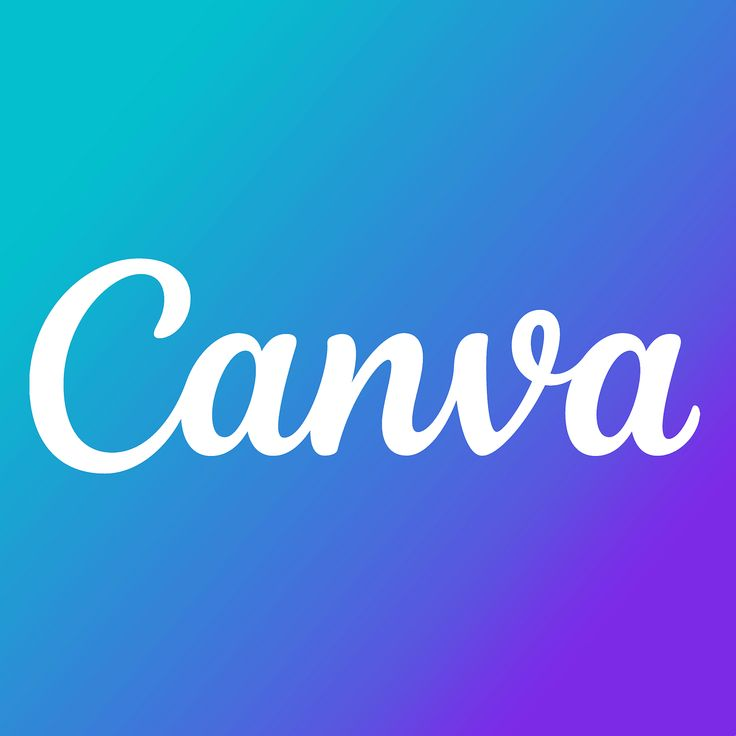

Chesya Annisa Izzati
Information System Student at Brawijaya University
Information System Student at Brawijaya University

As an Information System student, I am deeply interested in business, design, and videography. Throughout my academic journey, I have actively engaged myself in numerous organizations and committees, primarily taking on roles in finance and design capacities. My experience in managing financial affairs and conceptualizing various projects has honed my perseverance and sense of responsibility.



